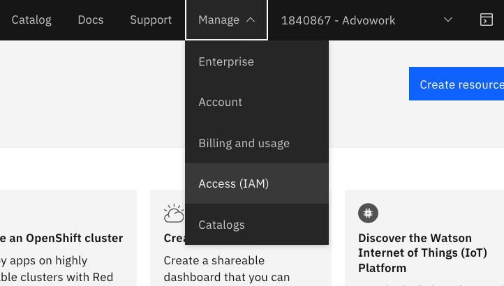
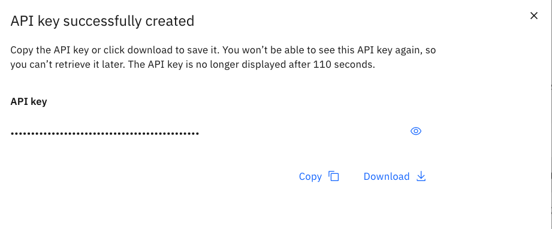
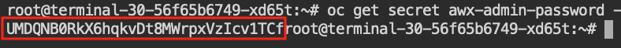
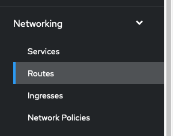
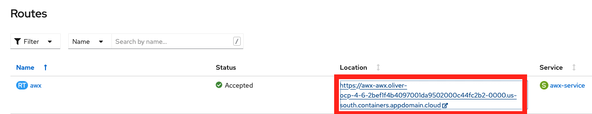
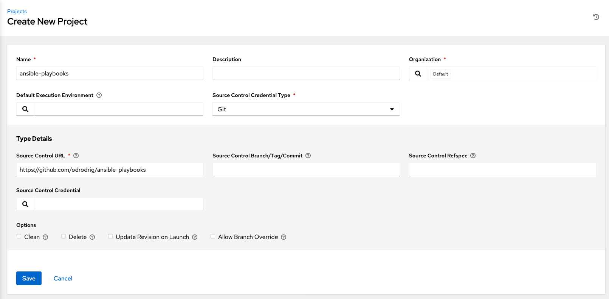
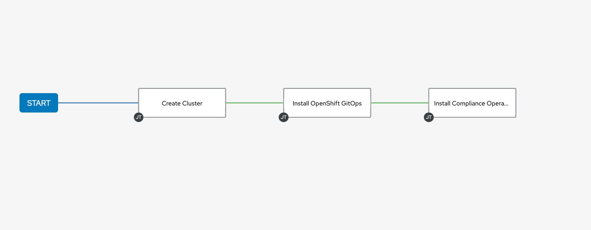
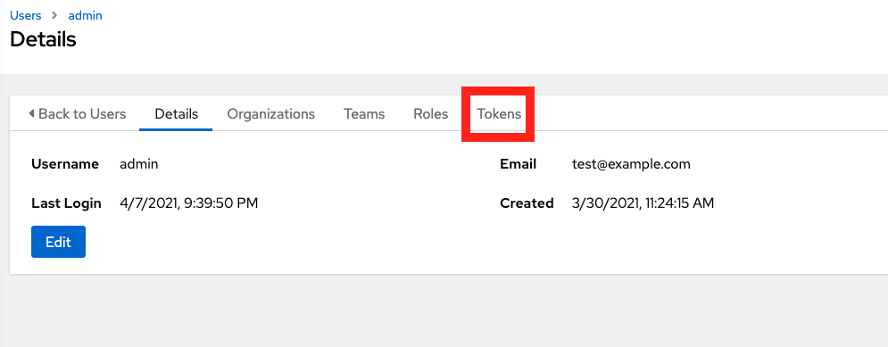
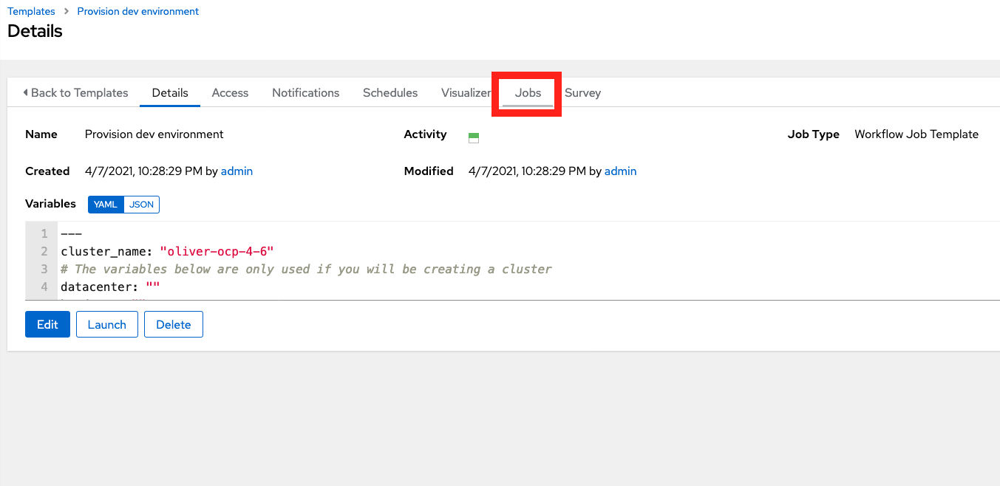

Cloud Native Infrastructure as Code and Configuration Management¶
In this lab we will be exploring the concepts of Infrastructure as code and configuration management in the scope of cloud native development.
Traditionally, infrastructure as code (IaC) mainly referred to provisioning virtual machines across datacenters and cloud providers, however, as we move to a more cloud native strategy involving container orchestration on public clouds, this provisioning process looks different. With the popularity of hosted kubernetes and OpenShift offerings on public clouds, it is easier than ever to provision a platform on which to deploy contianerized applications.
In this lab we will walk through the automated provisioning of an OpenShift cluster on IBM Cloud, configuring that cluster with common development tooling, and then finally deploying an application to that cluster. We will be utilizing Ansible to provision and configure our environment as well as the open source project AWX to manage the Ansible playbook runs.
Prerequisites¶
- IBM Cloud Account: Create a free account here
Getting access to the workshop environment¶
In this workshop we will be giving you an OpenShift cluster to work on. To access the workshop cluster, follow these steps:
-
Navigate to https://ansible-lab.mybluemix.net and enter you IBM ID (email used to create IBM Cloud account) and the lab password of
oslab. -
After requesting a cluster you should be given a link to take you to the workshop cluster in an IBM Cloud Account. Click on the link. Remember what number cluster you were assigned, we will need this later.
-
We will be using a web terminal environment so that participants can have access to the necessary cli tools without having to install anything. To access this environment, find your assigned number. This should be in the cluster name that you were assigned earlier when you requested a workshop environment.
The url to access the terminal environment follows this structure: base url + "/term" + assigned number without the leading 0s
The base url for everybody will be: https://oliver-citi-terms-2bef1f4b4097001da9502000c44fc2b2-0000.us-south.containers.appdomain.cloud
For example, if I was assigned cluster-030 my url would be https://oliver-citi-terms-2bef1f4b4097001da9502000c44fc2b2-0000.us-south.containers.appdomain.cloud/term30
1. Setup the environment¶
Authenticate to your OpenShift cluster¶
-
Now let's authenticate with our OpenShift cluster. Navigate to your openshift Cluster in IBM Cloud using the link given to you after requesting a cluster.
-
Click on the cluster listed to be taken to the cluster overview page.
-
Click on the
OpenShift web consolebutton to launch the console. -
From the console, click on the username at the top right of the page and select
Copy Login Command
-
Then, click on
Display token
-
Next, copy everything in the first box that contains the
oc logincommand.
-
Switch back to your terminal environment and paste in your oc login command.
You should now be authenticated and targeting your OpenShift cluster.
Get an API key from IBM Cloud¶
Now we need to get an IBM Cloud api key to access our account from the terminal.
-
Go back to your browser tab that is on IBM Cloud.
-
In the top right of the page, select the
Managedropdown, and selectAccess (IAM)
-
Then select
API keyson the left of the page. -
Click on the
Create an IBM Cloud API keybutton. Name the keyawxor whatever you wish. Clickcreate. -
Then, click on the
Copybutton to copy the new key. Paste this key in a temporary doc for now or save it in a key manager. We will use this later.It is important that you verify that you have the key somewhere else because once you close the window with the api key, you cannot retrieve it later. If you lose your key you will need to come back and create another one.

-
Switch back to your terminal environment.
-
In your terminal enviroment, create an environment variable to hold your api key
export IC_API_KEY=api key herePress enter.
This will be used by our ansible playbook.
Cloning the repo¶
-
In the terminal environment, run the following commands:
cd ~ git clone https://github.com/odrodrig/ansible-playbooks.git cd ansible-playbooks/playbooks
2. Running Ansible Playbooks¶
Now that we are in our terminal environment, let's try running some simple playbooks.
Playbooks allow users to script out tasks to be automated. You can run them by calling the ansible-playbook tool.
-
Run the ansible playbook
helloWorldby running the following command:ansible-playbook helloWorld.yml -v
3. Installing AWX¶
-
From your terminal, run the following commands to install the AWX operator replacing
cluster name herewith the cluster name that you were assigned:echo "cluster_name: cluster name here" > vars.yml ansible-playbook installAWX.yml -vThis playbook will do a few things:
- Get our cluster information from IBM Cloud
- Authenticate to our cluster using an API key from IBM Cloud
- Install the AWX operator
- Create a new project called "awx"
- Create an instance of AWX in our awx project
4. Configuring AWX¶
Now that we have AWX installed, let's configure it to manage the running of our playbooks.
Accessing AWX¶
-
First we need to get our admin password to log into AWX. From your terminal, run the following commands:
oc project awx oc get secret awx-admin-password -o jsonpath="{.data.password}" | base64 --decodeThe password will be output but unfortunately the terminal prompt gets in the way. Copy the password up until the word
rootas seen below.
-
Next, go back to your OpenShift console, click on
Networkingon the left side of the page to expand the menu and selectRoutes
-
Then select the link under the
Locationcolumn for theawxroute.
-
You will then be taken to your AWX login page. The credentials are as follows:
username: admin password: {what you copied earlier}Click login to be taken to your AWX dashboard.
Adding a project¶
-
The first thing we need to do now is import our playbooks into our AWX environment. We can do this by creating a
Projectand pointing it to a git repository. Navigate to theProjectstab on the left side of the page. -
Then, click on the blue
Addbutton. -
Name it
ansible-playbooksor whatever you like, and for theSource Control Credential Typedropdown, selectGit.In
Source Control URLenter the following repo:https://github.com/odrodrig/ansible-playbooksLastly, select the checkbox labeled 'Update Revision on Launch`
Your project should look like the image below.

Click
Save
Configuring Job Templates and Workflow Job Templates¶
-
Now that we have imported our playbooks, we need to create job templates for each playbook we want to run.
-
On the left side of the page, select the tab for
Templates. -
Click on
Addand selectAdd job template -
Configure the template with the values below. For the
InventoryandProjectfields you will need to click on the magnifying glass to select values.:- Name: Create Cluster
- Inventory: Demo Inventory
- Project: ansible-playbooks (or whatever you named your project)
- Playbook: playbooks/create.yml
Click
Save -
Create another job template just as you did before with the following values:
- Name: Install OpenShift GitOps
- Inventory: Demo Inventory
- Project: ansible-playbooks
- Playbook: playbooks/installOpenShiftGitOps.yml
Click
Save -
Create one more job template just like before with the following values:
- Name: Install Compliance Operator
- Inventory: Demo Inventory
- Project: ansible-playbooks
- Playbook: playbooks/installComplianceOperator.yml
Click
Save -
Each job template corresponds to a playbook that does one task. If we want to combine multiple jobs into one process, we will need a workflow job template.
The workflow that we will be building will create a cluster, install OpenShift GitOps, and lastly install the Compliance Operator.
From the
Templatesmenu, click onAddthen selectAdd workflow template -
Name the workflow template
Provision dev environment -
Then, in the
Variablessection, paste in the variables below. Be sure to replace{your cluster name here}with your actual cluster name.--- cluster_name: "{your cluster name here}" # The variables below are only used if you will be creating a cluster datacenter: "" hardware: "" kube_version: "" public_vlan_id: "" private_vlan_id: "" default_worker_ppol_size: "" entitlement: ""Click
Save -
You will then be taken to the workflow visualizer tool that allows us to string together job templates as part of a workflow. Click on the green
startbutton. -
In the new
Add Nodewindow that appears select theCreate Clusterjob template. Click Save. -
Now you should see your workflow with one node connected to the Start node. Select the
Create Clusternode and click on the plus (+) sign to add a new node. -
Select the
On Successbox and click next. -
Then select the
Install OpenShift GitOpsjob template and clickSave. -
Let's add one more node. Select the
Install OpenShift GitOpsnode and click on the plus (+) sign. -
Select the
On Successbox and click next. -
Then select the
Install Compliance Operatorjob template and clickSave.Your workflow should look like the image below:

-
Click on
Saveat the top right of the workflow visualizer page.
Adding a custom container group¶
In our AWX instance, each job run will run in a separate container on our cluster. To configure this we need to create whats known as a Container Group. When we create our container group we will specify what image we want to use for our job runs.
-
Click on the
Instance Groupstab on the left side of the page. -
Then click on the existing container group called
towerand click on theEditbutton. -
Select the checkbox under
OptionslabeledCustomize pod specification. -
In the custom pod spec field, overwrite what's there and paste in the following but do not save yet:
apiVersion: v1
kind: Pod
metadata:
namespace: awx
spec:
containers:
- image: docker.io/odrodrig/ibmcloud-ee:0.3
name: worker
env:
- name: IC_API_KEY
value: "xxx"
args:
- ansible-runner
- worker
-
In the custom pod spec that was just pasted in, add your IBM Cloud api key to the
valueproperty of theIC_API_Keyenv variable replacing thexxxx. -
Click
Save
5. Running Jobs on AWX¶
Now that our instance of AWX is configured, let's start running these playbooks. In this section we will explore two different ways to run our jobs.
Manually running a Job¶
-
Click on the
Templatestab on the left of the page. -
Find the job template called
Install Compliance Operatorand click on it. -
Click on the
Editbutton. -
In the job template scroll down to the
Variablessection and paste the following line in:cluster_name: "cluster-name"Replace
cluster-namewith the cluster name that you were assigned. -
Scroll down and click
Save -
Now, click on the
Launchbutton to launch a job utilizing this job template.You should now be taken to the output page of the job that we just launched. Wait here until the job completes.
While we can launch our jobs and workflow jobs manually from AWX, it would be better if we could set it up so that the jobs could be triggered without needing a human to log into AWX and click the launch button.
Launching a job via API¶
One of the benefits of using AWX/Ansible Tower is the ability to launch jobs via API request. This allows you to integrate your workflow runs into other processes. For example, a self serve form to request access to a new OpenShift development environment could trigger a workflow run in AWX.
-
Click on
Templateson the left side of the page to go back to the templates page. -
Select the
Provision dev environmentworkflow job template -
Go to the address bar of your browser and go to the very end of the address. Look for the number just before
/details. This is the workflow job template id and is needed to launch the job from the API. For example, in the partial address below, my workflow job template number is 21. Remember your number.
...us-south.containers.appdomain.cloud/#/templates/workflow_job_template/21/details
-
Next, we need to create a token that will allow our API calls to be authorized with AWX. Click on
Userson the left side of the page. -
Click on
Admin -
Click on the
Tokenstab
-
Click
Add -
In the
Scopedropdown selectWriteand leave the other fields empty. ClickSave -
In the new window that appears copy the token that is displayed and save it in a temporary scratch pad or text file. This is the only time the token will be visible. If you lose it, you will need to generate a new one.
-
For this lab we will keep things simple and use
curlto launch our workflow job. Go back to your terminal environment. -
Let's construct our
curlrequest. Copy and paste the curl command below into a scratch pad or text file so that it is easy to modify.
curl -X POST \
AWX_ROUTE/api/v2/workflow_job_templates/JOB_TEMPLATE_NUMBER/launch/ \
-H 'Authorization: Bearer AWX_TOKEN' \
-H 'Content-Type: application/json' \
-d '{
"extra_vars": {
"cluster_name": "CLUSTER_NAME"
}
}
'
Replace the following:
-
AWX_ROUTE - This is the address of the link that you clicked on to access AWX. You can find it by going to the OpenShift Console and looking at the route in the awx project.
-
JOB_TEMPLATE_NUMBER - This is the workflow job template number that we got in step 3 above.
-
AWX_TOKEN - This is the personal access token we just created in AWX for the Admin user.
-
CLUSTER_NAME - This is the name of the cluster you were assigned. You can find this on IBM Cloud.
-
Once you have all of the values replaced in your curl command, copy and paste it into your terminal environment and press enter.
-
Return back to AWX in your browser and cilck on the
Templatestap on the left. -
Click on the
Provision dev environmentworkflow job template -
Click on the
Jobstab. You should now see a job running that was started via API call.
-
Click on the job title to view the job output.
Conclusion¶
In this lab we explored how we can use Ansible playbooks to automate environment provisioning and configuration with Ansible and AWX/Ansible Tower. We tried three different methods of running our playbooks: manually using ansible-playbook, launching the jobs in AWX manually, and triggering jobs via API calls.